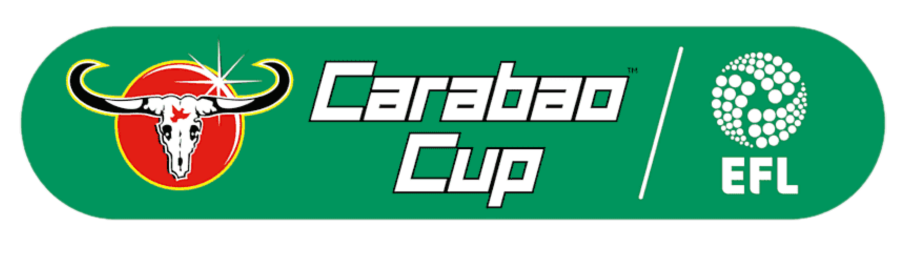

Our history:
A list of all Liverpool's trophies from 1892 to 2022: How many trophies does Liverpool have?
Liverpool trophies, how many do they have in total? The amount of Liverpool trophies have risen while under Klopp. Liverpool is the most successful club in the UK in matters of Champions League. Without Community Shield, they also lead the list of the club with most trophies in the Premier League, more than Manchester United.
The club is one of the most popular on earth and in the history of football. Manchester United and Everton have always been their rivals. The squad switched from red shirts and white shorts to an all-red home uniform in 1964 and has worn it ever since."You'll Never Walk Alone" is the club's anthem.
Liverpool trophies list:
64 is the number of Liverpool's trophies in total. Liverpool football club is the best in the Premier League.Liverpool's trophies have surged under Klopp, with the club winning four of the last six in the last ten years.
Cup (EFL/Carling/ Carabao)

Titles: 9
Years: 1981-1982, 1982-1983, 1983-1984, 1994-1995, 2000-2001, 2002-2003, 2011-2012, 2021-2022.
After the dramatic penalty shootouts with Chelsea in 2022, the reds won the cup, bringing the trophy back to Anfield. The club has won nine league titles, being a club record.
FA Cups

Titles: 8
Years: 1964-1965, 1973-1974, 1985-1986, 1988-1989, 1991-1992, 2000-2001, 2005-2006, 2021-2022.
The club has won the FA eight times. The first victory came in 1965 after they won 2-1 against Leeds United.
UEFA Champions League

Titles: 6
Years: 1976-1977, 1977-1978, 1980-1981, 1983-1984, 2004-2005, 2019-2020,
Liverpool won the 2005 UEFA Champions League Final, hosted at the Ataturk Stadium, Istanbul, by beating AC Milan 3-2 on penalties after the match finished 3-3 after extra time. The match was remarkable for the fact that AC Milan had taken a 3-0 lead in the first half, only for Liverpool to mount an impressive comeback and level the score in the space of 15 minutes.
FIFA Club World Cup

Titles: 1
Year : 2019
The Mercysider's only FIFA Club World Cup victory occurred in Doha in 2019 when Roberto Firmino's extra-time goal sealed a 1-0 victory over Flamengo.
League titles :
Titles: 19
Years: 1900-1901, 1905-1906, 1921-1922, 1922-1923, 1946-1947, 1963-1964, 1965-1966, 1972-1973, 1975-1976, 1976-1977, 1978-1979, 1979-1980, 1981-1982, 1982-1983, 1983-1984, 1985-1986, 1987-1988, 1989-1990, 2019-2020
With the current form, it seems Jürgen Klopp will lead the Reds to more Premier League victories.
Here is the famous wall of champions so you can see every single title Liverpool FC has won in their history: